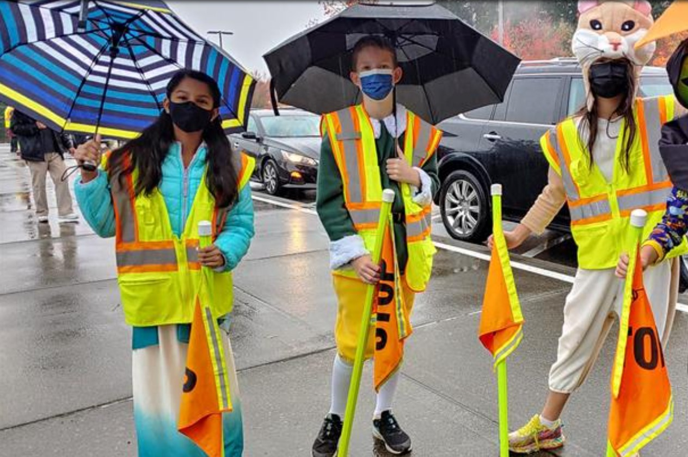
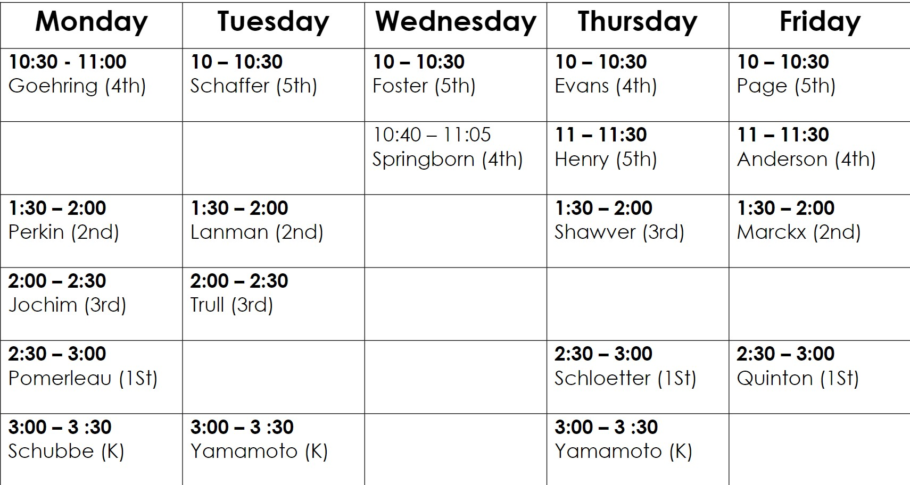
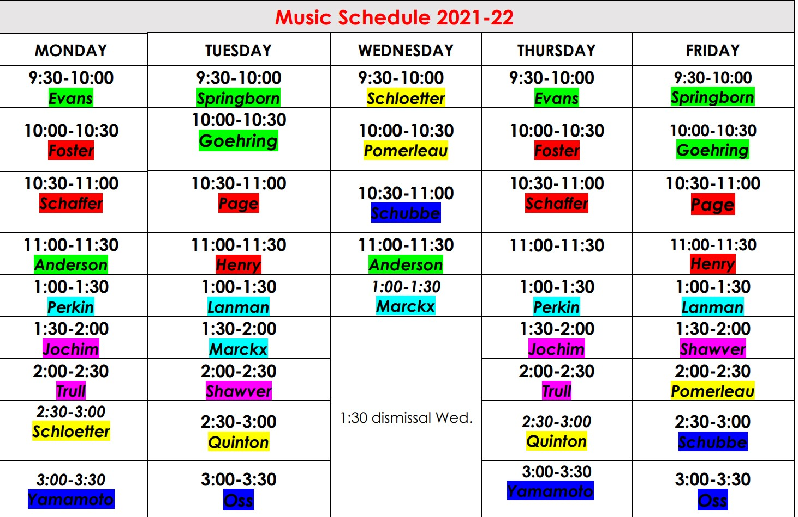
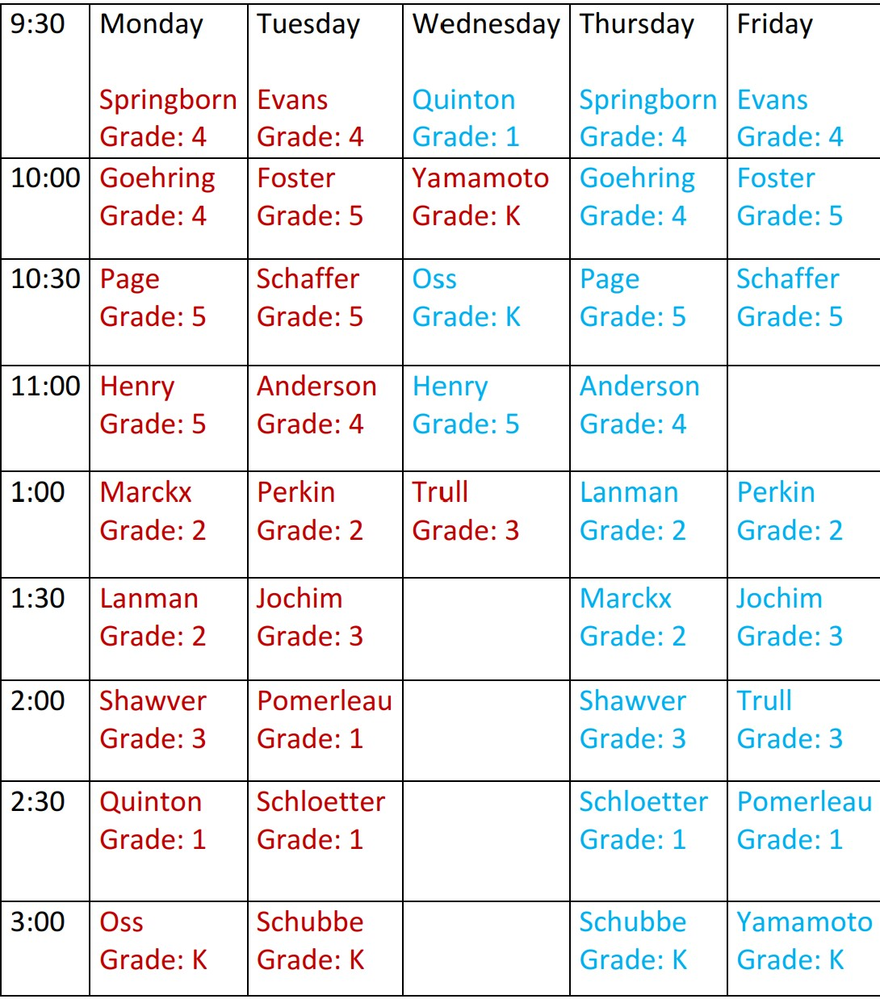

Cascade Ridge Elementary is a public school located in Sammamish, WA, which is in a large suburb setting. The student population of Cascade Ridge Elementary is 494 and the school serves K-5. Their mascot is a coyote, hence the students being called "cascade ridge coyotes.
Cascade ridge currantly has 1 school club, which is the newspaper club.
The newspaper club creates the monthly school newspaper.
Mrs. Page and Mrs. Foster mange the club.
There is also student council, which consists of 2 represenatives from each class in the school.
These represenatives make decisions and changes to the school.
They also can create spirit days.
You can also become a member of saftey patrol

Saftey patrol is your local student crossing gaurds.
In other words, they help young children cross the street.
This school also has specialists, AKA, library, music, and P.E.
The school librarian is Ms. Moor, who also teaches kids about book care, cyberbulling, ect.

The music teacher is Mrs. Creaser and teaches well music.

Finally, Mr. Smith the P.E teacher teaches,physical endurance, cardio, stamina, and flexability
